Change analysis for Congo, The Democratic Republic of the for
PRIMAP-hist v2.8_final compared to v2.7_final
This changelog is published under the creative commons non-commercial
share alike license. For more information see creativecommons.org.
Overview over
emissions by sector and gas
The following figures show the aggregate national total emissions
excluding LULUCF AR6GWP100 for the country reported priority scenario.
The dotted lines show the v2.7_final data.
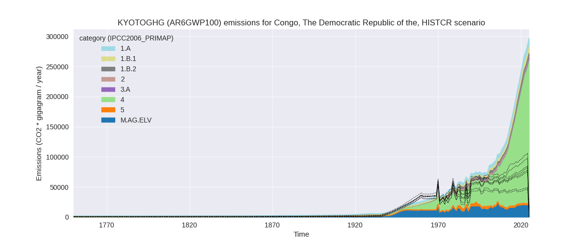
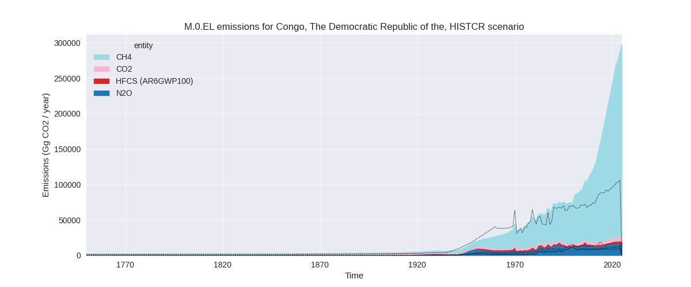
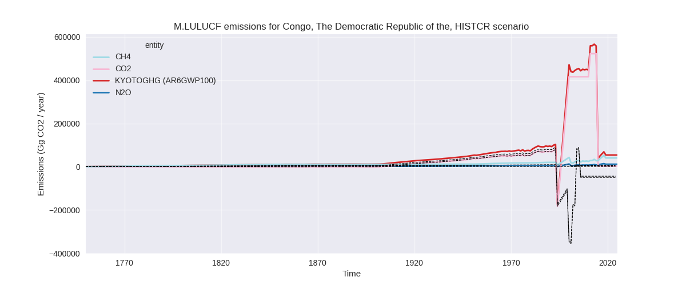
The following figures show the aggregate national total emissions
excluding LULUCF AR6GWP100 for the third party priority scenario. The
dotted lines show the v2.7_final data.
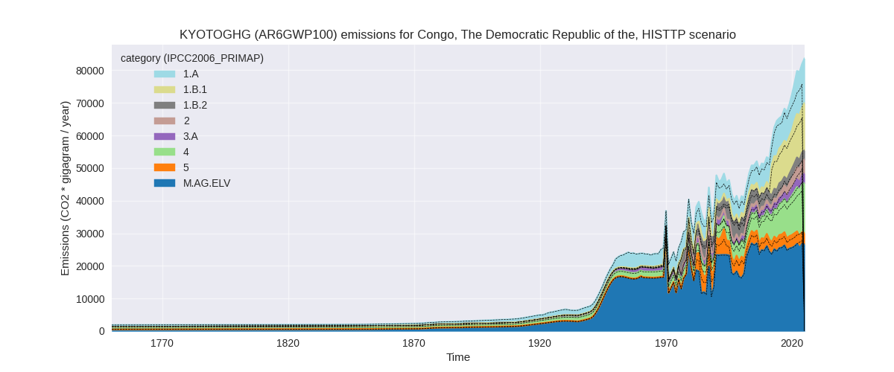
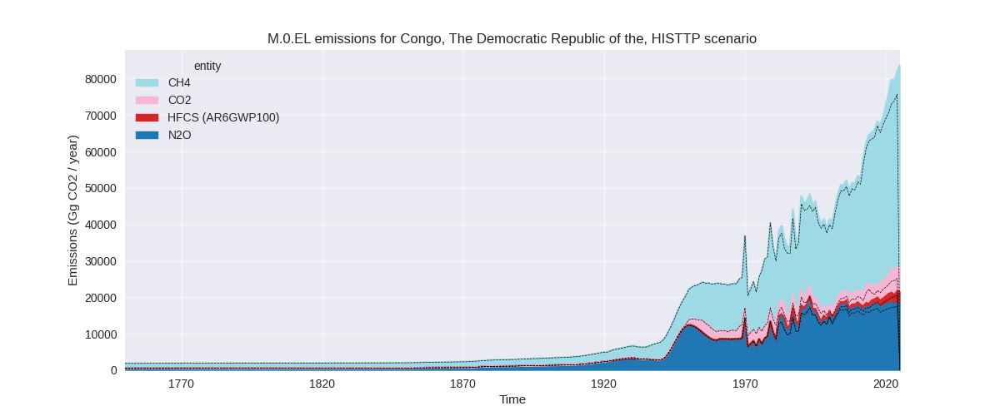
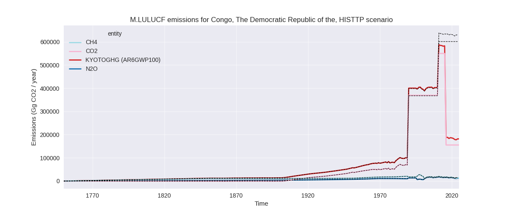
Used country reported data
The changelog with this information is available upon request for
non-commercial customers. Paying commercial customers will be provided
with the information.
Overview over changes
In the country reported priority scenario we have the following
changes for aggregate Kyoto GHG and national total emissions excluding
LULUCF (M.0.EL):
- Emissions in 2024 have changed by 167.8%% (178070.75 Gg CO2 / year)
- Emissions in 1990-2024 have changed by 71.0%% (55282.15 Gg CO2 / year)
In the third party priority scenario we have the following changes
for aggregate Kyoto GHG and national total emissions excluding LULUCF
(M.0.EL):
- Emissions in 2024 have changed by 8.2%% (6175.10 Gg CO2 / year)
- Emissions in 1990-2024 have changed by 4.3%% (2261.53 Gg CO2 / year)
Most
important changes per scenario and time frame
In the country reported priority scenario the
following sector-gas combinations have the highest absolute impact on
national total KyotoGHG (AR6GWP100) emissions in 2024
(up to 10 with either at least 0.2% impact on total emissions or at
least 20% change):
- 1: 4, CH4 with 200583.42 Gg CO2 / year (776.7%, 189.0%)
- 2: M.AG.ELV, CH4 with -30170.48 Gg CO2 / year (-73.5%, -28.4%)
- 3: 1.A, CH4 with 7271.55 Gg CO2 / year (440.2%, 6.9%)
- 4: 1.B.1, CH4 with -5144.24 Gg CO2 / year (-39.8%, -4.8%)
- 5: M.AG.ELV, N2O with 2633.50 Gg CO2 / year (47.2%, 2.5%)
- 6: 1.A, CO2 with -1948.97 Gg CO2 / year (-32.3%, -1.8%)
- 7: 1.B.1, CO2 with 1256.18 Gg CO2 / year (119760.6%, 1.2%)
- 8: 5, N2O with 1118.24 Gg CO2 / year (43.4%, 1.1%)
- 9: 2, CO2 with -953.64 Gg CO2 / year (-85.2%, -0.9%)
- 10: 1.B.1, N2O with 881.69 Gg CO2 / year (516.7%, 0.8%)
In the country reported priority scenario the
following sector-gas combinations have the highest absolute impact on
national total KyotoGHG (AR6GWP100) emissions in
1990-2024 (up to 10 with either at least 0.1% impact on
total emissions or at least 10% change):
- 1: 4, CH4 with 78174.93 Gg CO2 / year (558.7%, 100.4%)
- 2: M.AG.ELV, CH4 with -30046.95 Gg CO2 / year (-78.5%, -38.6%)
- 3: 1.A, CH4 with 3626.87 Gg CO2 / year (241.9%, 4.7%)
- 4: M.AG.ELV, N2O with 2596.71 Gg CO2 / year (55.4%, 3.3%)
- 5: 5, N2O with 1387.42 Gg CO2 / year (48.8%, 1.8%)
- 6: 1.A, CO2 with -1313.58 Gg CO2 / year (-36.0%, -1.7%)
- 7: 1.B.1, CH4 with -752.20 Gg CO2 / year (-15.1%, -1.0%)
- 8: 1.B.1, N2O with 502.58 Gg CO2 / year (770.2%, 0.6%)
- 9: 4, CO2 with 356.76 Gg CO2 / year (inf%, 0.5%)
- 10: 1.A, N2O with 322.53 Gg CO2 / year (96.3%, 0.4%)
In the third party priority scenario the following
sector-gas combinations have the highest absolute impact on national
total KyotoGHG (AR6GWP100) emissions in 2024 (up to 10
with either at least 0.2% impact on total emissions or at least 20%
change):
- 1: 1.A, CO2 with 1536.92 Gg CO2 / year (48.3%, 2.0%)
- 2: 1.A, CH4 with 1345.67 Gg CO2 / year (21.2%, 1.8%)
- 3: 4, CH4 with 1154.30 Gg CO2 / year (9.4%, 1.5%)
- 4: 5, N2O with 1118.24 Gg CO2 / year (43.4%, 1.5%)
- 5: 4, CO2 with 691.82 Gg CO2 / year (inf%, 0.9%)
- 6: 1.B.1, CH4 with 637.55 Gg CO2 / year (4.9%, 0.8%)
- 7: M.AG.ELV, CH4 with -608.68 Gg CO2 / year (-4.3%, -0.8%)
- 8: M.AG.ELV, N2O with -441.73 Gg CO2 / year (-3.3%, -0.6%)
- 9: 1.B.2, CH4 with 363.72 Gg CO2 / year (15.6%, 0.5%)
- 10: 1.A, N2O with 201.10 Gg CO2 / year (24.8%, 0.3%)
In the third party priority scenario the following
sector-gas combinations have the highest absolute impact on national
total KyotoGHG (AR6GWP100) emissions in 1990-2024 (up
to 10 with either at least 0.1% impact on total emissions or at least
10% change):
- 1: 5, N2O with 1387.42 Gg CO2 / year (48.8%, 2.6%)
- 2: 4, CO2 with 356.76 Gg CO2 / year (inf%, 0.7%)
- 3: 1.A, CO2 with 187.91 Gg CO2 / year (8.6%, 0.4%)
- 4: 1.A, CH4 with 176.90 Gg CO2 / year (3.9%, 0.3%)
- 5: 1.B.1, CH4 with 79.83 Gg CO2 / year (1.6%, 0.2%)
- 6: 4, CH4 with 72.99 Gg CO2 / year (1.1%, 0.1%)
Notes on data changes
The changelog with this information is available upon request for
non-commercial customers. Paying commercial customers will be provided
with the information.
Changes by sector and gas
For each scenario and time frame the changes are displayed for all
individual sectors and all individual gases. In the sector plot we use
aggregate Kyoto GHGs in AR6GWP100. In the gas plot we usenational total
emissions without LULUCF.
country reported scenario
2024
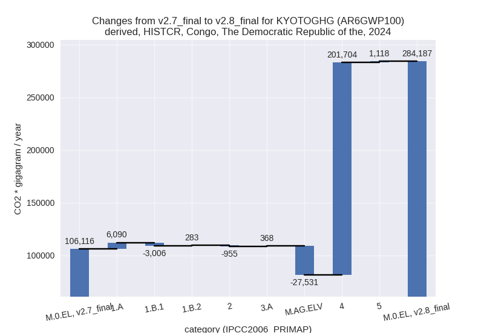
1990-2024
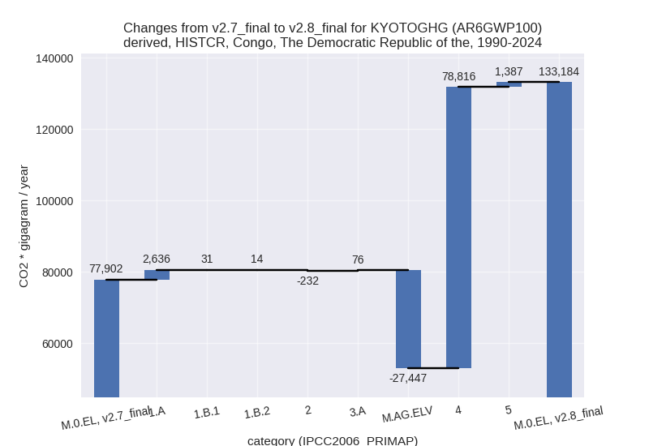
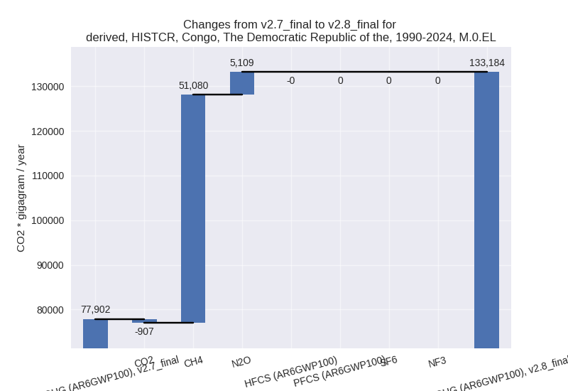
third party scenario
2024
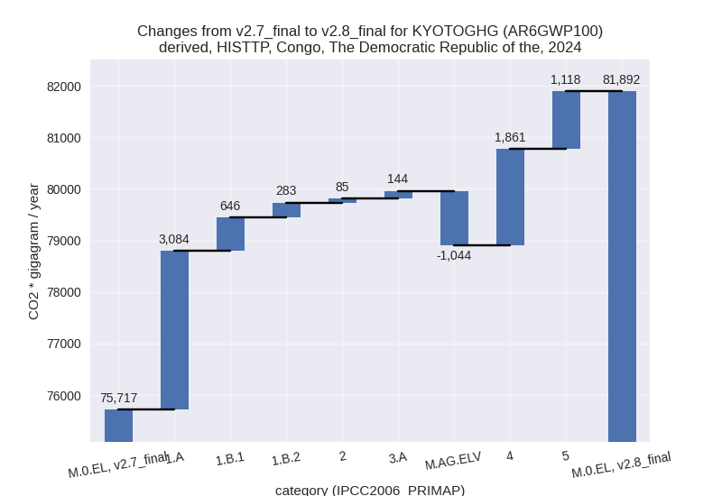
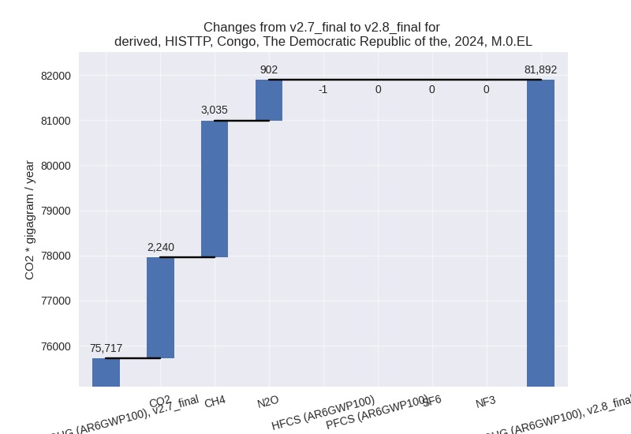
1990-2024
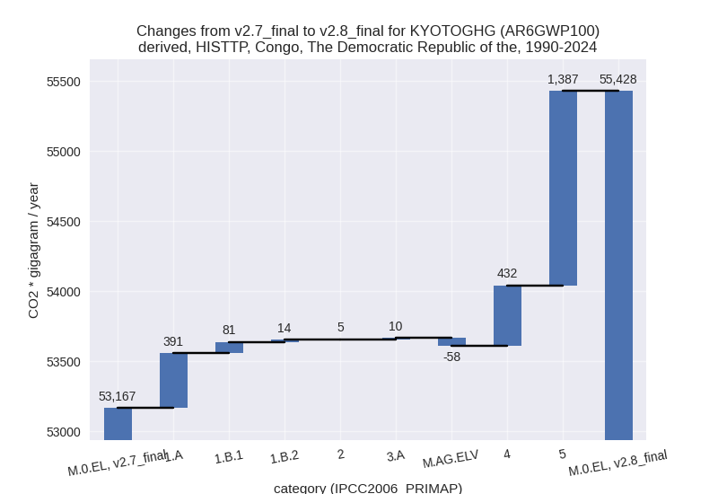
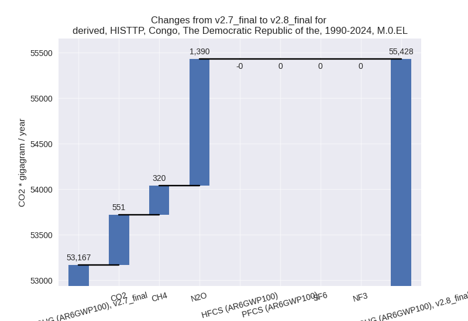
Detailed changes for the
scenarios:
country reported scenario
(HISTCR):
Most important changes
per time frame
For 2024 the following sector-gas combinations have
the highest absolute impact on national total KyotoGHG (AR6GWP100)
emissions in 2024 (up to 20 with either at least 0.2%
impact on total emissions or at least 20% change):
- 1: 4, CH4 with 200583.42 Gg CO2 / year (776.7%), 189.0%)
- 2: M.AG.ELV, CH4 with -30170.48 Gg CO2 / year (-73.5%), -28.4%)
- 3: 1.A, CH4 with 7271.55 Gg CO2 / year (440.2%), 6.9%)
- 4: 1.B.1, CH4 with -5144.24 Gg CO2 / year (-39.8%), -4.8%)
- 5: M.AG.ELV, N2O with 2633.50 Gg CO2 / year (47.2%), 2.5%)
- 6: 1.A, CO2 with -1948.97 Gg CO2 / year (-32.3%), -1.8%)
- 7: 1.B.1, CO2 with 1256.18 Gg CO2 / year (119760.6%), 1.2%)
- 8: 5, N2O with 1118.24 Gg CO2 / year (43.4%), 1.1%)
- 9: 2, CO2 with -953.64 Gg CO2 / year (-85.2%), -0.9%)
- 10: 1.B.1, N2O with 881.69 Gg CO2 / year (516.7%), 0.8%)
- 11: 1.A, N2O with 767.12 Gg CO2 / year (226.7%), 0.7%)
- 12: 4, CO2 with 691.82 Gg CO2 / year (inf%), 0.7%)
- 13: 4, N2O with 429.02 Gg CO2 / year (87.7%), 0.4%)
- 14: 1.B.2, CH4 with 363.72 Gg CO2 / year (15.6%), 0.3%)
- 15: 3.A, CH4 with 347.06 Gg CO2 / year (14.1%), 0.3%)
- 16: 1.B.2, CO2 with -80.91 Gg CO2 / year (-30.7%), -0.1%)
- 17: M.AG.ELV, CO2 with 6.00 Gg CO2 / year (inf%), 0.0%)
- 18: 1.B.2, N2O with -0.30 Gg CO2 / year (-29.3%), -0.0%)
For 1990-2024 the following sector-gas combinations
have the highest absolute impact on national total KyotoGHG (AR6GWP100)
emissions in 1990-2024 (up to 20 with either at least
0.1% impact on total emissions or at least 10% change):
- 1: 4, CH4 with 78174.93 Gg CO2 / year (558.7%), 100.4%)
- 2: M.AG.ELV, CH4 with -30046.95 Gg CO2 / year (-78.5%), -38.6%)
- 3: 1.A, CH4 with 3626.87 Gg CO2 / year (241.9%), 4.7%)
- 4: M.AG.ELV, N2O with 2596.71 Gg CO2 / year (55.4%), 3.3%)
- 5: 5, N2O with 1387.42 Gg CO2 / year (48.8%), 1.8%)
- 6: 1.A, CO2 with -1313.58 Gg CO2 / year (-36.0%), -1.7%)
- 7: 1.B.1, CH4 with -752.20 Gg CO2 / year (-15.1%), -1.0%)
- 8: 1.B.1, N2O with 502.58 Gg CO2 / year (770.2%), 0.6%)
- 9: 4, CO2 with 356.76 Gg CO2 / year (inf%), 0.5%)
- 10: 1.A, N2O with 322.53 Gg CO2 / year (96.3%), 0.4%)
- 11: 4, N2O with 284.62 Gg CO2 / year (90.1%), 0.4%)
- 12: 1.B.1, CO2 with 280.82 Gg CO2 / year (29958.4%), 0.4%)
- 13: 2, CO2 with -231.91 Gg CO2 / year (-58.8%), -0.3%)
- 14: 3.A, N2O with 14.68 Gg CO2 / year (11.1%), 0.0%)
- 15: M.AG.ELV, CO2 with 3.57 Gg CO2 / year (inf%), 0.0%)
Changes in the main sectors for aggregate KyotoGHG (AR6GWP100)
are
- 1: Total sectoral emissions in 2022 are 26698.63 Gg
CO2 / year which is 10.0% of M.0.EL emissions. 2024 Emissions have
changed by 14.2% (3365.83 Gg CO2 /
year). 1990-2024 Emissions have changed by 18.5% (2680.70 Gg CO2 / year). For 2024
the changes per gas
are:
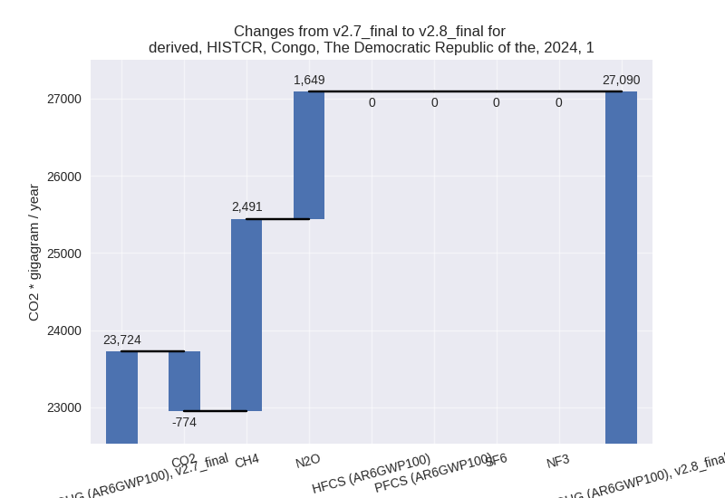
For 1990-2024 the changes per gas
are:
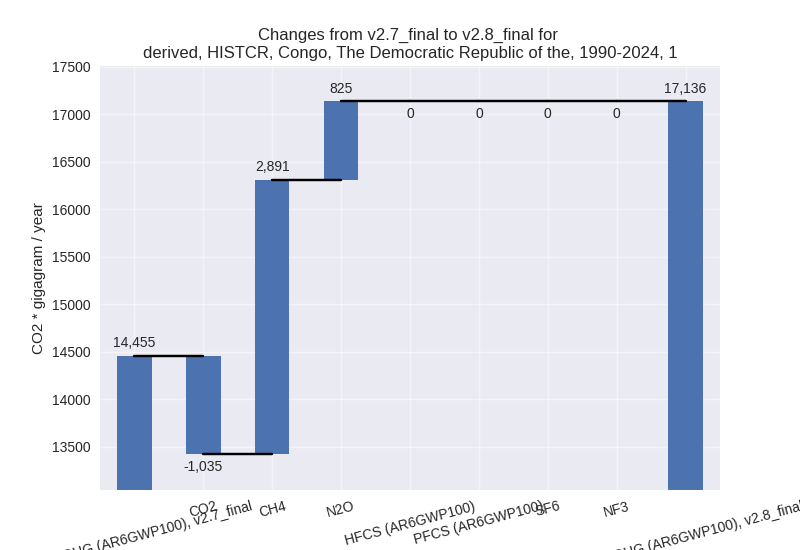
The changes come from the following subsectors:
- 1.A: Total sectoral emissions in 2022 are 13873.95
Gg CO2 / year which is 52.0% of category 1 emissions. 2024 Emissions
have changed by 75.9% (6089.70 Gg
CO2 / year). 1990-2024 Emissions have changed by 48.1% (2635.82 Gg CO2 / year). For 2024
the changes per gas
are:
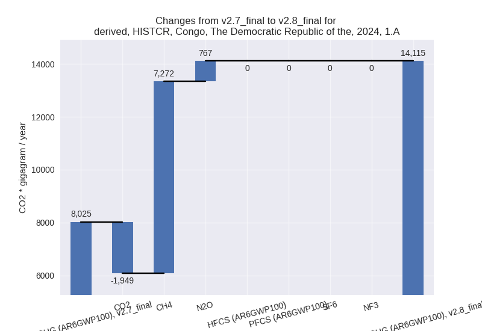
For 1990-2024 the changes per gas
are:
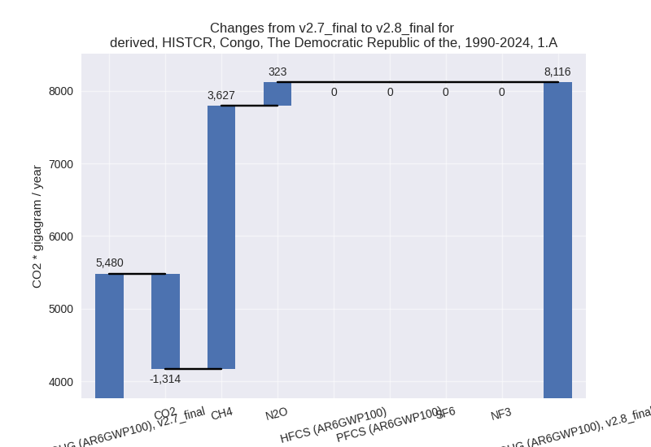
There is no subsector information available in PRIMAP-hist.
- 1.B.1: Total sectoral emissions in 2022 are 9828.33
Gg CO2 / year which is 36.8% of category 1 emissions. 2024 Emissions
have changed by -23.0% (-3006.37 Gg
CO2 / year). 1990-2024 Emissions have changed by 0.6% (31.21 Gg CO2 / year). For 2024 the
changes per gas
are:
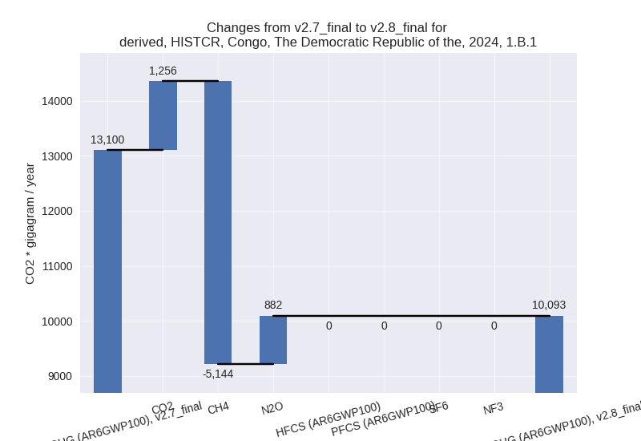
There is no subsector information available in PRIMAP-hist.
- 1.B.2: Total sectoral emissions in 2022 are 2996.36
Gg CO2 / year which is 11.2% of category 1 emissions. 2024 Emissions
have changed by 10.9% (282.50 Gg CO2
/ year). 1990-2024 Emissions have changed by 0.3% (13.68 Gg CO2 / year). For 2024 the
changes per gas
are:
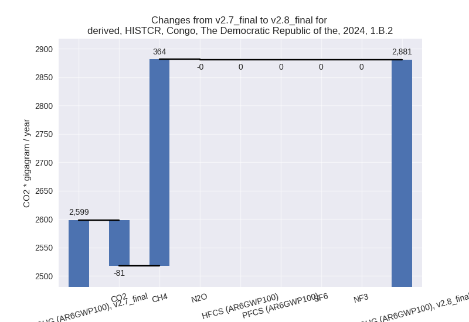
There is no subsector information available in PRIMAP-hist.
- 2: Total sectoral emissions in 2022 are 2869.53 Gg
CO2 / year which is 1.1% of M.0.EL emissions. 2024 Emissions have
changed by -22.5% (-954.98 Gg CO2 /
year). 1990-2024 Emissions have changed by -16.5% (-231.95 Gg CO2 / year). For 2024
the changes per gas
are:
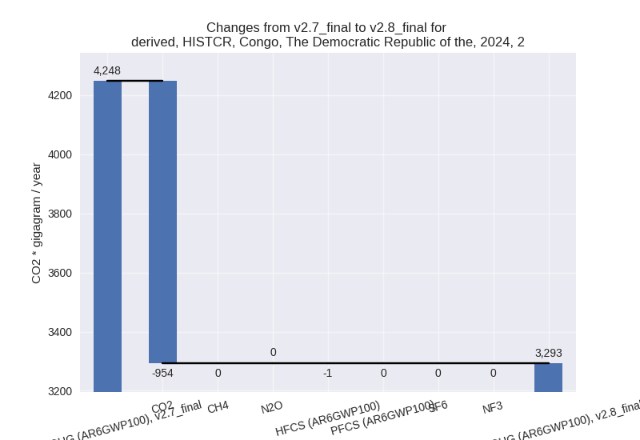
For 1990-2024 the changes per gas
are:
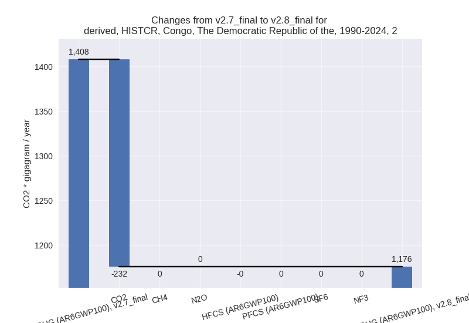
- M.AG: Total sectoral emissions in 2022 are 21836.14
Gg CO2 / year which is 8.2% of M.0.EL emissions. 2024 Emissions have
changed by -55.1% (-27162.60 Gg CO2
/ year). 1990-2024 Emissions have changed by -61.0% (-27370.33 Gg CO2 / year). For 2024
the changes per gas
are:
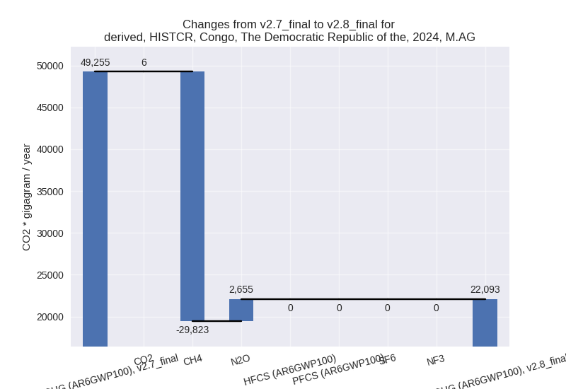
For 1990-2024 the changes per gas
are:
The changes come from the following subsectors:
- 3.A: Total sectoral emissions in 2022 are 2645.40
Gg CO2 / year which is 12.1% of category M.AG emissions. 2024 Emissions
have changed by 14.2% (368.37 Gg CO2
/ year). 1990-2024 Emissions have changed by 4.0% (76.33 Gg CO2 / year). For 2024 the
changes per gas
are:
For 1990-2024 the changes per gas
are:
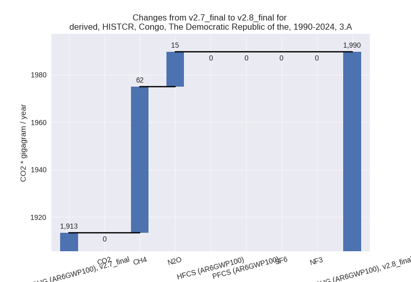
There is no subsector information available in PRIMAP-hist.
- M.AG.ELV: Total sectoral emissions in 2022 are
19190.74 Gg CO2 / year which is 87.9% of category M.AG emissions. 2024
Emissions have changed by -59.0%
(-27530.97 Gg CO2 / year). 1990-2024 Emissions have changed by -63.9% (-27446.66 Gg CO2 / year). For 2024
the changes per gas
are:
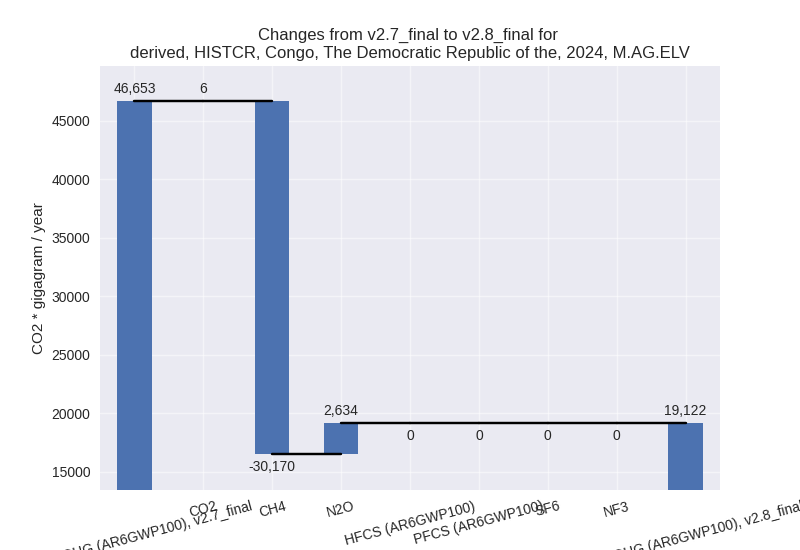
For 1990-2024 the changes per gas
are:
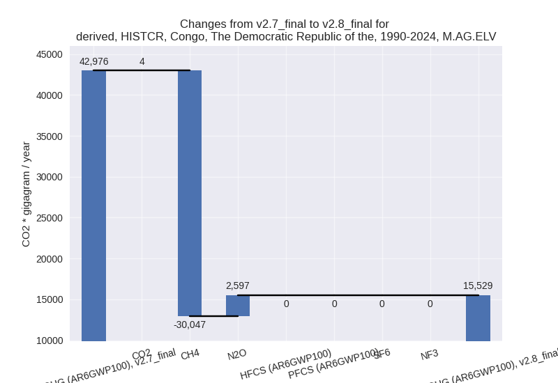
There is no subsector information available in PRIMAP-hist.
- 4: Total sectoral emissions in 2022 are 212030.30
Gg CO2 / year which is 79.3% of M.0.EL emissions. 2024 Emissions have
changed by 766.5% (201704.27 Gg CO2
/ year). 1990-2024 Emissions have changed by 550.8% (78816.31 Gg CO2 / year). For 2024
the changes per gas
are:
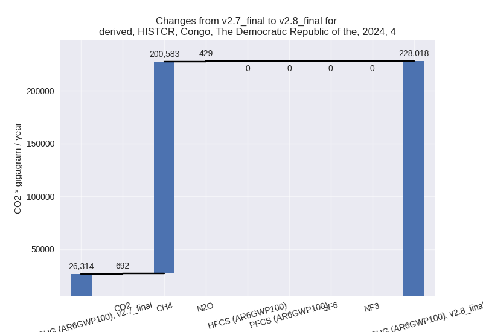
For 1990-2024 the changes per gas
are:
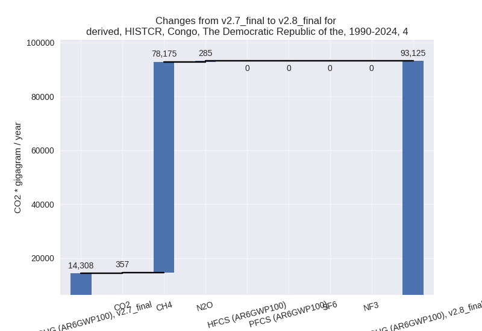
- 5: Total sectoral emissions in 2022 are 3829.18 Gg
CO2 / year which is 1.4% of M.0.EL emissions. 2024 Emissions have
changed by 43.4% (1118.24 Gg CO2 /
year). 1990-2024 Emissions have changed by 48.8% (1387.42 Gg CO2 / year). For 2024
the changes per gas
are:
For 1990-2024 the changes per gas
are:
third party scenario (HISTTP):
Most important changes
per time frame
For 2024 the following sector-gas combinations have
the highest absolute impact on national total KyotoGHG (AR6GWP100)
emissions in 2024 (up to 20 with either at least 0.2%
impact on total emissions or at least 20% change):
- 1: 1.A, CO2 with 1536.92 Gg CO2 / year (48.3%), 2.0%)
- 2: 1.A, CH4 with 1345.67 Gg CO2 / year (21.2%), 1.8%)
- 3: 4, CH4 with 1154.30 Gg CO2 / year (9.4%), 1.5%)
- 4: 5, N2O with 1118.24 Gg CO2 / year (43.4%), 1.5%)
- 5: 4, CO2 with 691.82 Gg CO2 / year (inf%), 0.9%)
- 6: 1.B.1, CH4 with 637.55 Gg CO2 / year (4.9%), 0.8%)
- 7: M.AG.ELV, CH4 with -608.68 Gg CO2 / year (-4.3%), -0.8%)
- 8: M.AG.ELV, N2O with -441.73 Gg CO2 / year (-3.3%), -0.6%)
- 9: 1.B.2, CH4 with 363.72 Gg CO2 / year (15.6%), 0.5%)
- 10: 1.A, N2O with 201.10 Gg CO2 / year (24.8%), 0.3%)
- 11: 1.B.2, CO2 with -80.91 Gg CO2 / year (-30.7%), -0.1%)
- 12: M.AG.ELV, CO2 with 6.00 Gg CO2 / year (inf%), 0.0%)
- 13: 1.B.2, N2O with -0.30 Gg CO2 / year (-29.3%), -0.0%)
For 1990-2024 the following sector-gas combinations
have the highest absolute impact on national total KyotoGHG (AR6GWP100)
emissions in 1990-2024 (up to 20 with either at least
0.1% impact on total emissions or at least 10% change):
- 1: 5, N2O with 1387.42 Gg CO2 / year (48.8%), 2.6%)
- 2: 4, CO2 with 356.76 Gg CO2 / year (inf%), 0.7%)
- 3: 1.A, CO2 with 187.91 Gg CO2 / year (8.6%), 0.4%)
- 4: 1.A, CH4 with 176.90 Gg CO2 / year (3.9%), 0.3%)
- 5: 1.B.1, CH4 with 79.83 Gg CO2 / year (1.6%), 0.2%)
- 6: 4, CH4 with 72.99 Gg CO2 / year (1.1%), 0.1%)
- 7: M.AG.ELV, CO2 with 3.57 Gg CO2 / year (inf%), 0.0%)
Changes in the main sectors for aggregate KyotoGHG (AR6GWP100)
are
- 1: Total sectoral emissions in 2022 are 29518.58 Gg
CO2 / year which is 37.0% of M.0.EL emissions. 2024 Emissions have
changed by 15.4% (4012.19 Gg CO2 /
year). 1990-2024 Emissions have changed by 3.0% (485.58 Gg CO2 / year). For 2024 the
changes per gas
are:
For 1990-2024 the changes per gas
are:
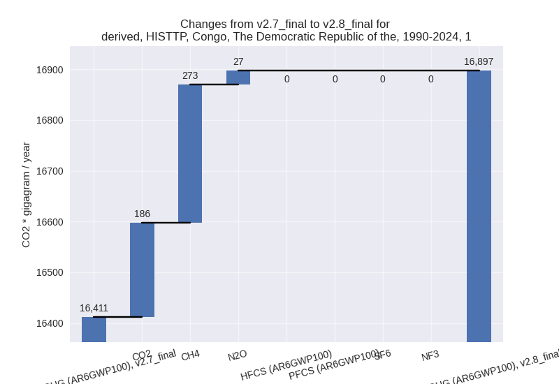
The changes come from the following subsectors:
- 1.A: Total sectoral emissions in 2022 are 13188.57
Gg CO2 / year which is 44.7% of category 1 emissions. 2024 Emissions
have changed by 29.8% (3083.68 Gg
CO2 / year). 1990-2024 Emissions have changed by 5.3% (391.01 Gg CO2 / year). For 2024 the
changes per gas
are:
For 1990-2024 the changes per gas
are:
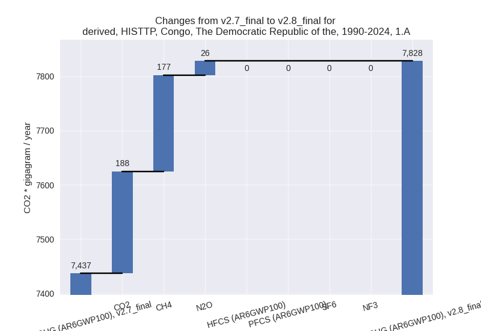
There is no subsector information available in PRIMAP-hist.
- 1.B.1: Total sectoral emissions in 2022 are
13333.65 Gg CO2 / year which is 45.2% of category 1 emissions. 2024
Emissions have changed by 4.9%
(646.00 Gg CO2 / year). 1990-2024 Emissions have changed by 1.6% (80.89 Gg CO2 / year). For 2024 the
changes per gas
are:
There is no subsector information available in PRIMAP-hist.
- 1.B.2: Total sectoral emissions in 2022 are 2996.36
Gg CO2 / year which is 10.2% of category 1 emissions. 2024 Emissions
have changed by 10.9% (282.50 Gg CO2
/ year). 1990-2024 Emissions have changed by 0.3% (13.68 Gg CO2 / year). For 2024 the
changes per gas
are:
There is no subsector information available in PRIMAP-hist.
- 2: Total sectoral emissions in 2022 are 3674.02 Gg
CO2 / year which is 4.6% of M.0.EL emissions. 2024 Emissions have
changed by 2.1% (85.05 Gg CO2 /
year). 1990-2024 Emissions have changed by 0.4% (5.00 Gg CO2 / year). For 2024 the
changes per gas
are:
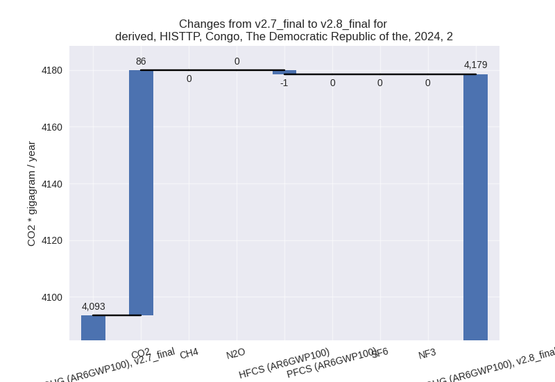
- M.AG: Total sectoral emissions in 2022 are 29150.45
Gg CO2 / year which is 36.5% of M.0.EL emissions. 2024 Emissions have
changed by -3.0% (-900.90 Gg CO2 /
year). 1990-2024 Emissions have changed by -0.2% (-48.57 Gg CO2 / year). For 2024 the
changes per gas
are:
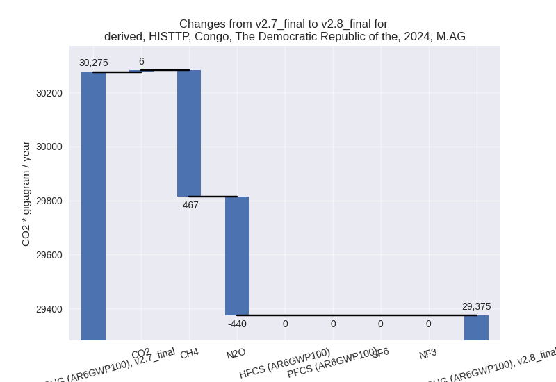
The changes come from the following subsectors:
- 3.A: Total sectoral emissions in 2022 are 2406.90
Gg CO2 / year which is 8.3% of category M.AG emissions. 2024 Emissions
have changed by 5.6% (143.50 Gg CO2
/ year). 1990-2024 Emissions have changed by 0.5% (9.71 Gg CO2 / year). For 2024 the
changes per gas
are:
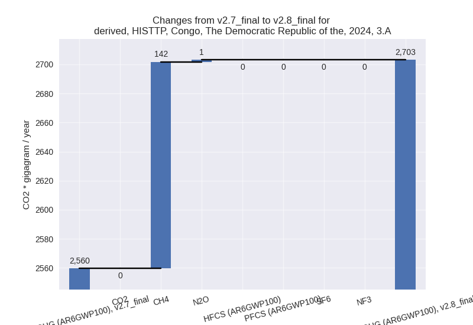
There is no subsector information available in PRIMAP-hist.
- M.AG.ELV: Total sectoral emissions in 2022 are
26743.55 Gg CO2 / year which is 91.7% of category M.AG emissions. 2024
Emissions have changed by -3.8%
(-1044.40 Gg CO2 / year). 1990-2024 Emissions have changed by -0.2% (-58.28 Gg CO2 / year). For 2024 the
changes per gas
are:
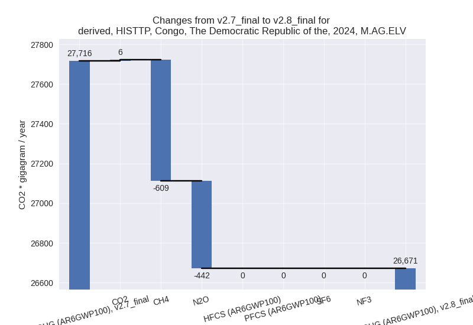
There is no subsector information available in PRIMAP-hist.
- 4: Total sectoral emissions in 2022 are 13596.09 Gg
CO2 / year which is 17.0% of M.0.EL emissions. 2024 Emissions have
changed by 14.6% (1860.53 Gg CO2 /
year). 1990-2024 Emissions have changed by 6.2% (432.11 Gg CO2 / year). For 2024 the
changes per gas
are:
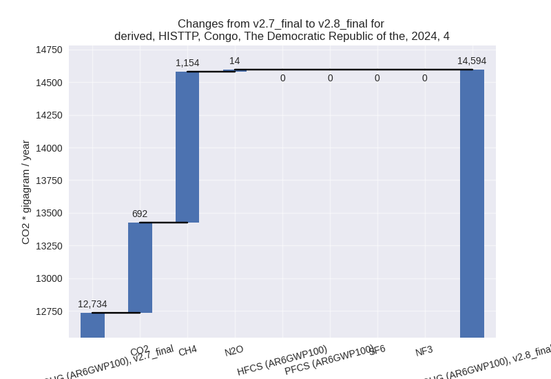
For 1990-2024 the changes per gas
are:
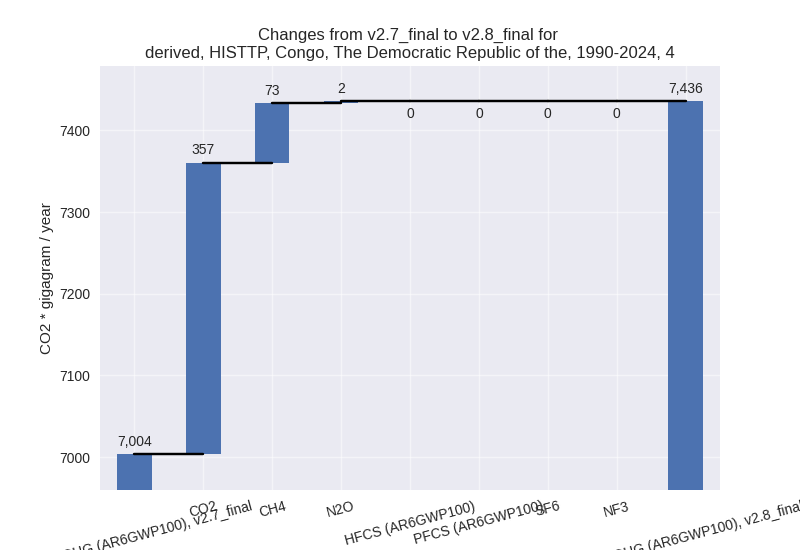
- 5: Total sectoral emissions in 2022 are 3829.18 Gg
CO2 / year which is 4.8% of M.0.EL emissions. 2024 Emissions have
changed by 43.4% (1118.24 Gg CO2 /
year). 1990-2024 Emissions have changed by 48.8% (1387.42 Gg CO2 / year). For 2024
the changes per gas
are:
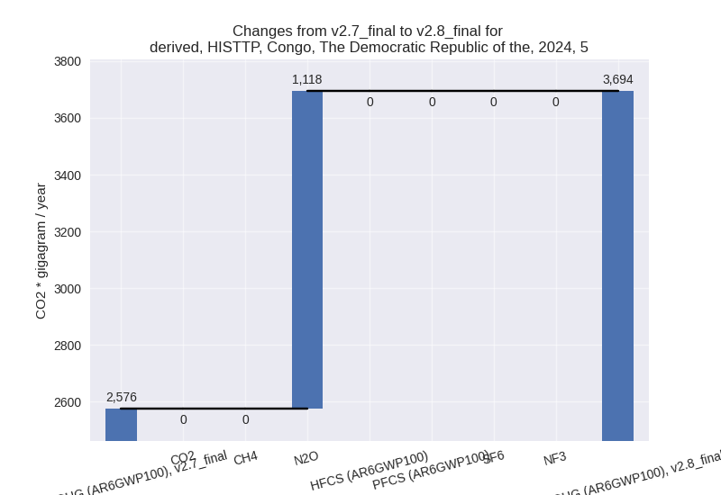
For 1990-2024 the changes per gas
are:
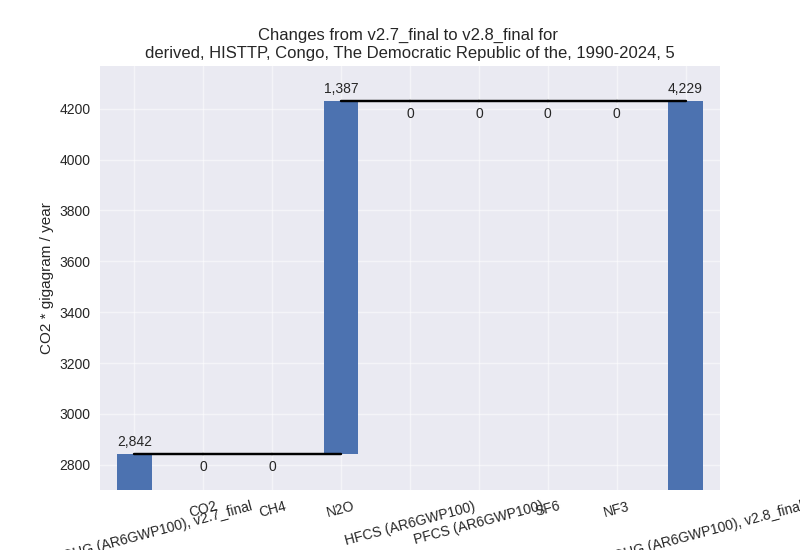